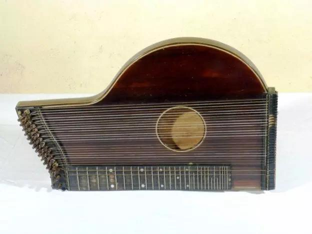
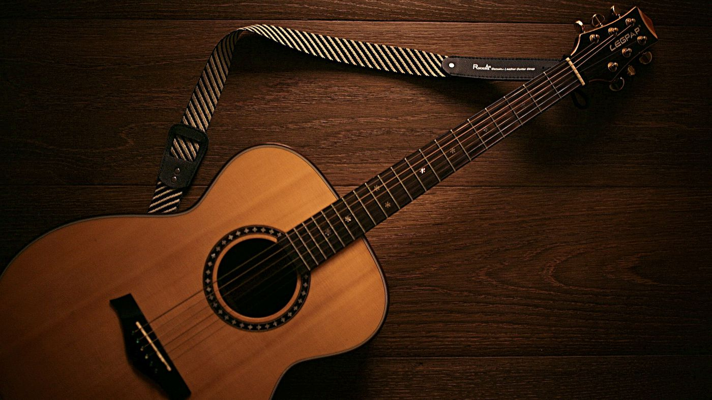

O violão é um instrumento de cordas, com uma caixa geralmente feita de madeira, que gera uma acústica facilitando a propagação do som. Em alguns países de língua espanhola é conhecido como guitarra. A história do violão nos remete há quase 2.000 A.C. Os atuais violonistas aceitam atualmente duas teorias: -O violão é um instrumento derivado do alaúde árabe, levado pelos mulçumanos para a península Ibérica e adaptando-se muito bem as atividades da corte; -O violão derivou-se da “Cítara romana”, tendo seu uso expandindo com a dominação do império romano.
No Brasil temos a introdução da viola (instrumento de 10 ou 5 cordas duplas) trazida pelos portugueses durante a colonização do país. Por certo tempo ainda houve uma confusão em relação aos termos viola/violão no país, hoje, porém a discrepância entre os dois instrumentos é notória. A utilização do violão é umas das mais diversificadas, podendo ser utilizado tanto na música instrumental (orquestras), quanto em acompanhamento da voz (canções solo). Por um período da história o violão foi difamado devido a ser instrumento preferido dos boêmios e seresteiros, levando o título de “instrumento marginal”, “coisa de vagabundo”, no entanto esse fato já foi superado.
O país cultivou sua própria safra de violonistas, podendo citar entre eles: -Clementino Lisboa: iniciou as apresentações de violão em público, apresentando o instrumento para a elite carioca; -Joaquim Santos: fundador da revista "O violão"; -Aníbal Sardinha: precurssor da bossa-nova. Podemos citar ainda, Jorge do Fusa, Américo Jacomino, Nicanor Teixeira, Egberto Gismonti... A música brasileira para violão tem por base a pequena obra de Villa-Lobos (importante violonista nacional que teve até sua vida adaptada para o cinema), que conta basicamente com 12 estudos de violão.